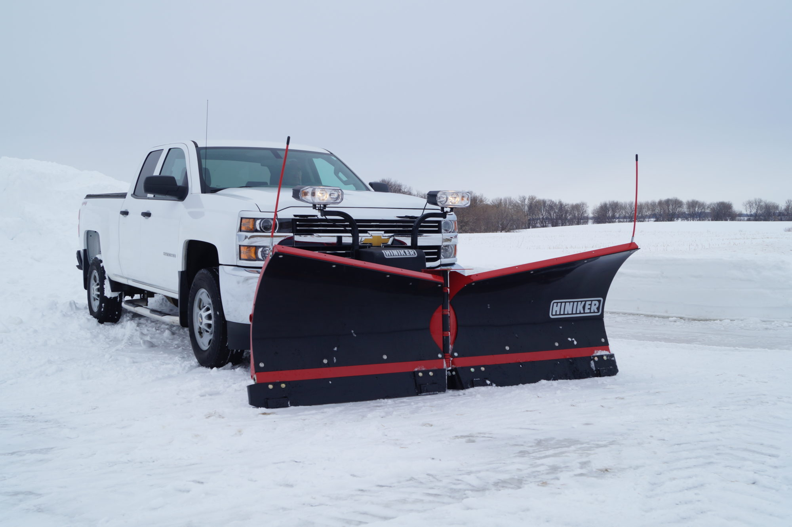
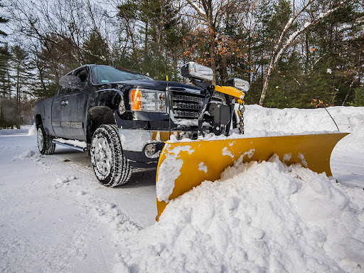
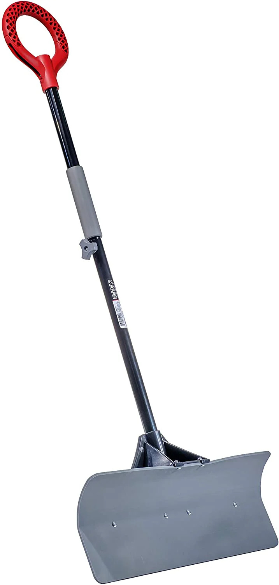

| | | | | | | | | | | | | | |
|

|
Need to get rid of snow?
Call the Plow King!
|

|
As the winter arrives, people must still vigilant to how they travel. Despite this, we can't control what nature offers.
As the temperatures are falling and snow and ice are being developed, transporting and travelling are becoming a hassle.
Are you tired of having your road entrance hindered and blocked by snow and ice? Do you wish to have no involvement in wasting
important time taking out snow and ice? Well look no further than to call me, Barney Gumble - otherwise known as the Plow King.
In calling me, I will do the best work in taking out snow and ice that would cause inconveniences for transport and travel. Snow and ice
will no longer be such nuisances when the Plow King's around. The Plow King offers services of removing unwanted snow and ice, with 4 to 6
inches of removing snow and ice costing around $60.
Here the Plow King will require postcode/address and telephone number for those who wish to pay for this service.
The Plow King will take roughly 10 minutes to 20 minutes of completing the job, depending how big the work is.
The Plow King offers other services, such as utilizing snow shovels and salt for minor inconveniences. What's more is that
the Plow King owns a store, sporting very powerful plow trucks and tools. The prices are quite cheap making it a reliable
store for those who seeks to do the job for themselves.
|
The Plow King Store Offers
|
|
|
|

|
|
Plow Trucks are very useful and makes life with travel and transport much easier. And they're only as cheap as $3,500! That's right, $3,500!
|
Plow Trucks can come in different colour and shape and can be customized to one's liking for an additional $500!
|
What's more is that the Plow King provides very sturdy and efficient snow shovels for only $30.
|
|
So what are you waiting for? Call the Plow King at 7648-4377. Otherwise, you can email me at barneygumble@theplowking.ie for more information into the Plow King.
Until then, stay vigilant and be safe from snow and ice!
|